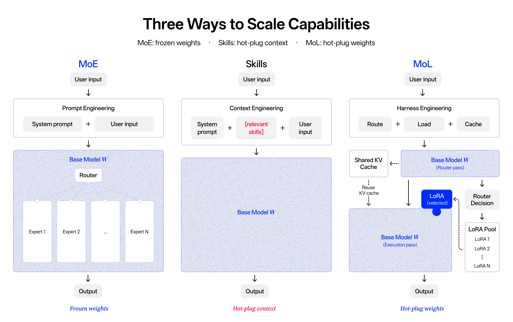
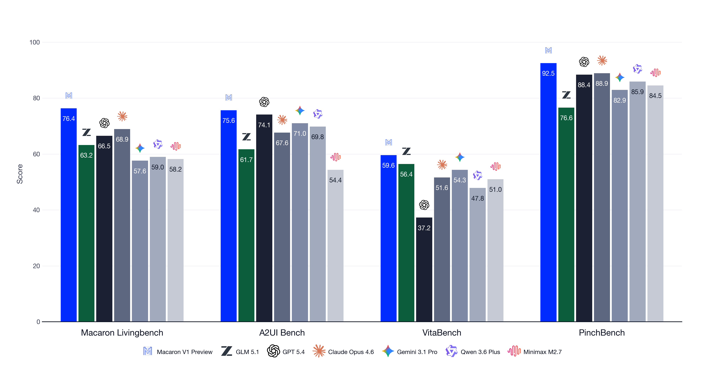
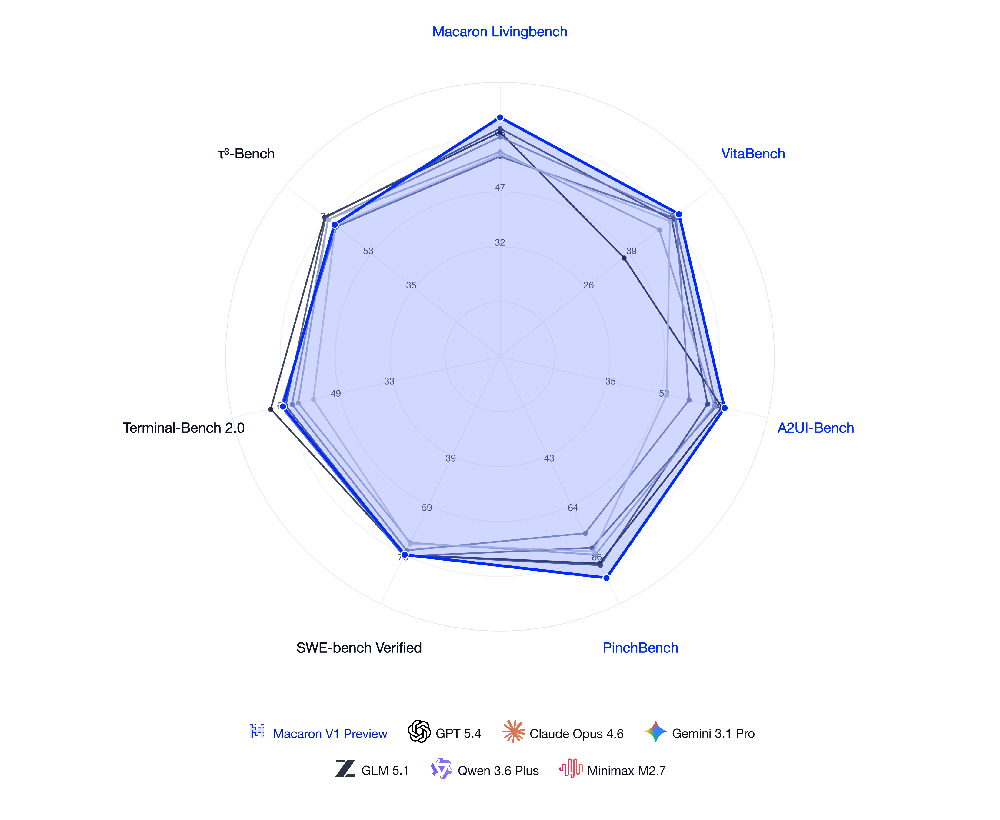
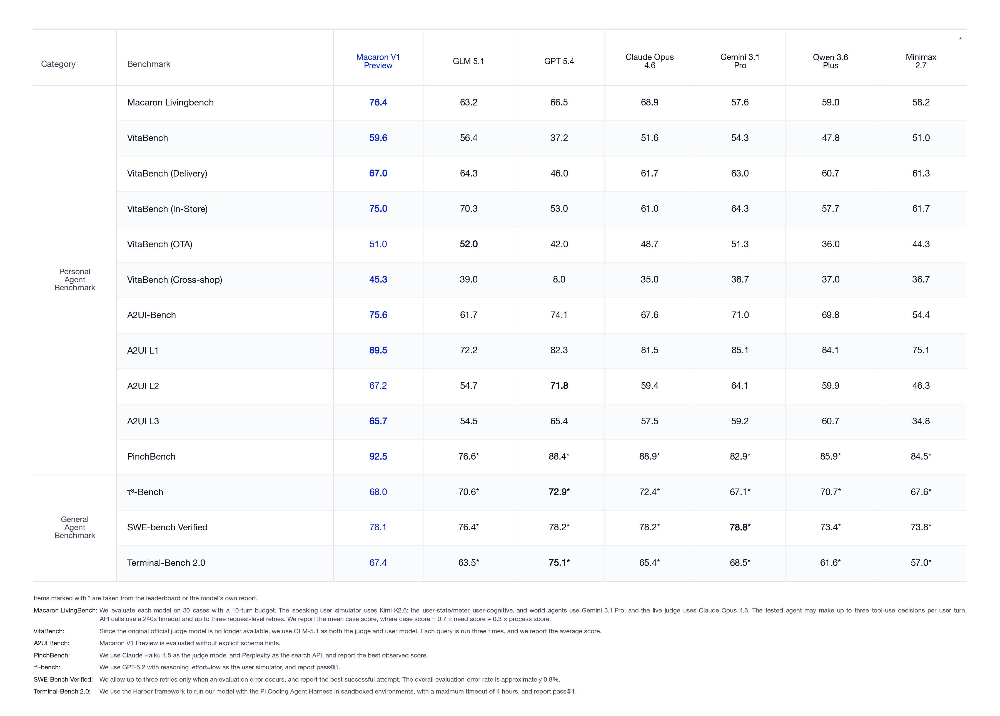

Mind Lab发布了Macaron-V1-Preview，一个749B（744B基座+5×1B LoRA）的Agent模型，基于GLM5.1后训练。该模型采用创新的Mixture-of-LoRA（MoL）架构，将不同能力隔离到独立的LoRA空间中，解决了一个模型同时训练多项Agent能力时的优化干扰问题。
MoL的核心思想是：将共享相似技能和思维模式的任务聚类到一个LoRA中，将技能差异大的任务放在不同的LoRA中。Macaron-V1-Preview发布了5个专家：L0（通用Chat）、L1（个人生活任务）、L2（Coding）、L3（A2UI生成式UI）、L4（OpenClaw任务）。新能力只需训练并注册一个LoRA，无需触碰基座或已有专家。
与通常训练专用路由模型的MoE方法不同，Macaron将模型选择暴露为工具调用（tool call），直接放在harness层。默认入口是L0，它挂载一个`change_model` 工具，通过标准OpenAI兼容的tool-call API暴露。
路由分为两个阶段：显式路由：L0在收到用户输入时发出`change_model` 调用，切换到正确的专家；隐式路由：专家完成后自动返回L0，让下一个用户消息从默认入口开始。
这种设计使路由可调试（在trace中直接看到tool call），可服务（vLLM的OpenAI server模式直接支持），可扩展（新专家只需注册一条元数据）。

Macaron LivingBench是Mind Lab自研的Agent评测，针对真实生活场景和动态任务设计。与静态基准不同，LivingBench包含三层耦合的动态性：
动态噪声：数据源可能不完整、过时或跨应用矛盾。动态环境：餐厅没座位了，路线因天气和交通变了，用户想起了预算限制。动态用户：用户的需求是逐步透露的，信任是逐步建立的。
评测包含三层架构：数据层从真实用户需求出发，角色和环境一起生成，矛盾被设计性地嵌入；沙箱层运行高保真用户模拟器，包含模块化认知架构（情绪、近期事件、认知负载），基于agent是否赢得信任来渐进式共享信息；评估层以用户世界的最终状态判断成功，同时按UX维度（延迟、侵入性、错误恢复）聚合过程级评分。
LivingBench不是冻结的测试集，它与产品紧密耦合，新场景持续从生产中的真实用户需求和AI-人类摩擦中蒸馏。
Macaron将生成式UI（Generative UI）视为个人模型的核心能力：没有它，模型能回答得好但不能展示、选择、调整或交还控制权。
模型直接针对Google的A2UI协议训练，并构建了A2UI-Bench进行评测。评测分三层：协议正确性（A2UI动作是否格式良好）、任务构建正确性（动作是否构成回答用户请求的UI）、真实用户体验提升（交互是否比纯文本响应更有效）。此外还有视觉侧评估：在真实客户端渲染每个负载，检查溢出的内容、打乱的布局、隐藏的控制等语言模型看不到的问题。
通过与TileRT团队的合作，Macaron将A2UI推理速度优化到3 ms TPOT的动态交互式UI生成场景。同时，团队扩展了A2UI协议本身，使其更灵活、更通用，能覆盖个人agent真正需要的交互面。

现代后训练流水线将单个模型推过许多非常不同的任务，并试图将结果能力合并到一组最终权重中。但Macaron团队的发现是：Chat、Tool Use、Reasoning和Coding依赖不同的技能和非常不同的思维链模式。当这些技能共享同一参数空间时，它们开始冲突：一个方向的改进悄悄损害另一个方向的能力。
MoL通过设计解决了这个冲突。每个专家沿着自己的轨迹发展，新能力只需训练并注册一个LoRA。L0用于默认Chat和通用目的，L1用于个人生活任务，L2用于Coding，L3用于A2UI，L4用于OpenClaw任务。
三明治训练策略（Rollout Routing Replay, R3）保持每个LoRA上的RL稳定：先冻结基座，只在LoRA上进行RL训练，通过路由replay确保每个专家在其对应的数据上训练而不干扰其他专家。

Macaron团队认为伟大的Chat是无可还原地主观的：它由用户的偏好、表达风格、互动习惯以及他们对语言本身的阅读和评价方式塑造。两个用户遇到相同的情绪时刻可能需要完全不同的回应。
因此团队同时训练了Chat的四个耦合维度：人格（模型持有自己的立场并分享）、角色（在压力、冲突和长时间对话中保持一致的行为）、思考深度（以真正角度处理难题，同时保持对其他可能性的开放）、聊天体验（真实对话的节奏：知道何时安静，何时用一个好句子而不是三个要点）。
在Macaron的评估中，这些维度在SWE-Bench Verified和Terminal-Bench 2上保持基础能力不下降的前提下，通过LivingBench和VitaBench等重点评测验证了Agent能力的提升。

参考：https://macaron.im/mindlab/research/macaron-v1-preview